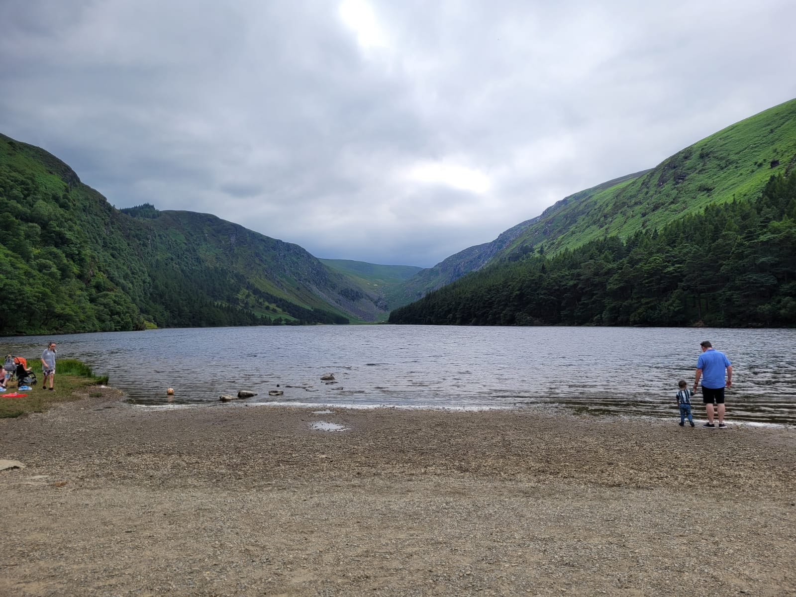
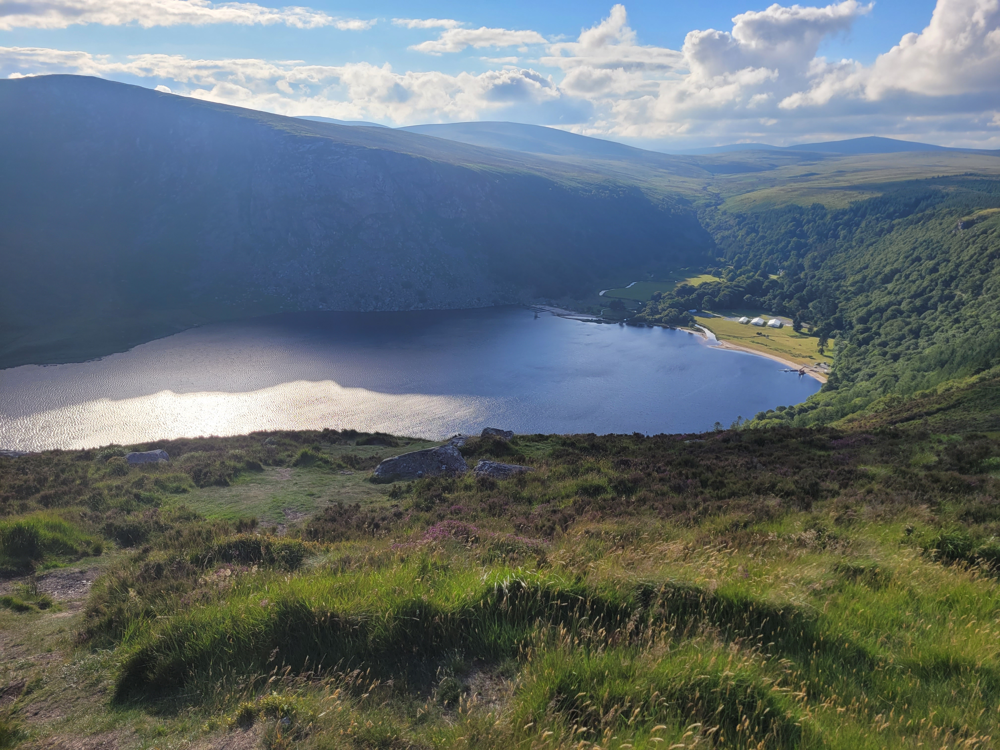

Glendalough
Glendalough (Irish: Gleann Dá Loch, meaning 'valley of two lakes') is a glacial valley in County Wicklow, Ireland, renowned for an Early Medieval monastic settlement founded in the 6th century by St Kevin. From 1825 to 1957, the head of the Glendalough Valley was the site of a galena lead mine. Glendalough is also a recreational area for picnics, for walking along networks of maintained trails of varying difficulty, and also for rock-climbing.
Glendalough Homepage

Glendalough is home to one of the most important monastic sites in Ireland. This early Christian monastic settlement was founded by St. Kevin in the 6th century and from this developed the ‘Monastic City’. The ‘City’ consists of a number of monastic remains, and the most impressive being the Round Tower which stands 30m high. The main group of monastic buildings lies downstream near the Round Tower. The grounds were entered through the Gateway, which has two round headed granite arches. Beyond St. Mary’s Church is the Priest’s House, a 12th Century building in Romanesque style, with an interesting carving of a much earlier date on the lintel of the doorway.
Glendalough Heritage Homepage

Sally's Gap
Why is it called Sally Gap? Sailearnán possibly means 'a place of willows'. Therefore Sally Gap seems to be a loose translation of the original Irish name.
Luggala Estate Limited became the custodians of Luggala Estate in 2019. We follow in the footsteps of The La Touche Family, Oonagh Guinness (Lady Oranmore and Browne) and The Honourable Garech Browne and we are committed to preserving their legacy. As dedicated environmentalists and conservationists, our mission is to conserve, protect and enhance the landscape and built heritage of Luggala Estate for generations to come. We are privileged to be able to undertake this vital work, restoring our unique Irish landscape.
Luggala Estate Homepage
Luggala Estate viewpoint GPS Latitude: 53.1035, Longitude: -6.2835.

Sally Gaps is a cross-road that leads you North to Dublin, West to Blessington, South to Glendalough or East to Roundwood. the Sally Gap got its road after the Irish rebellion of 1798. It was built by British Army forces looking to flush rebels from the hills, and to this day is known as the Military Road.